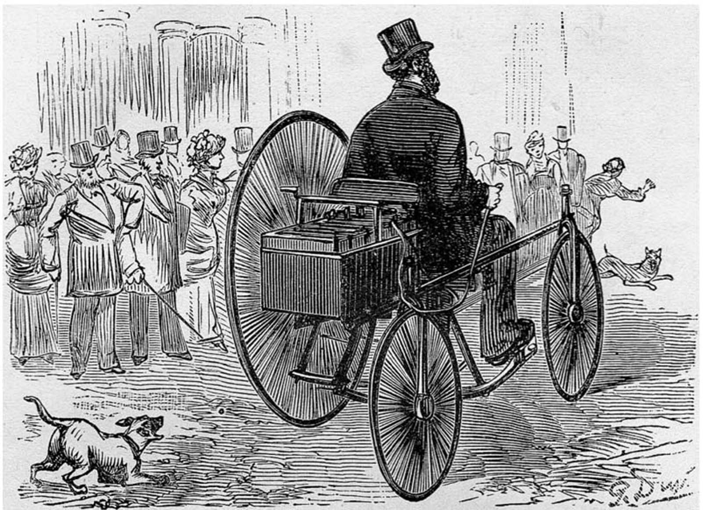
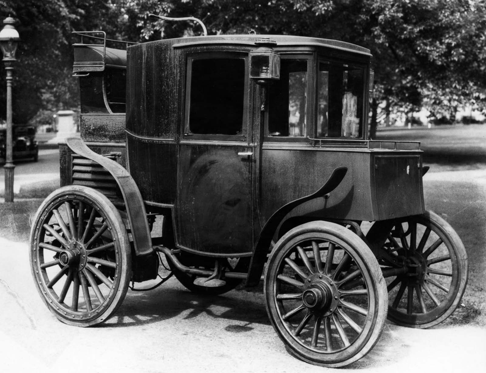
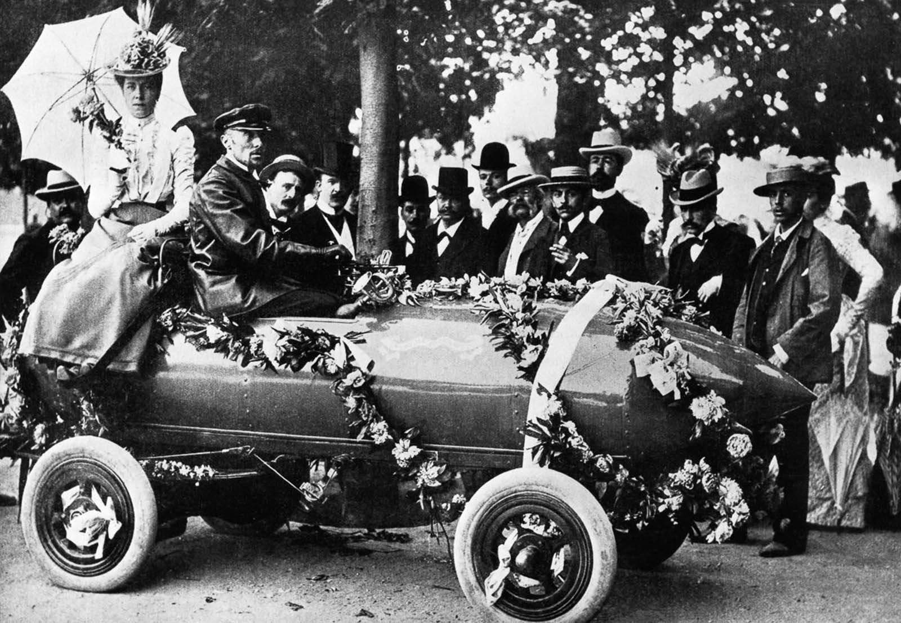
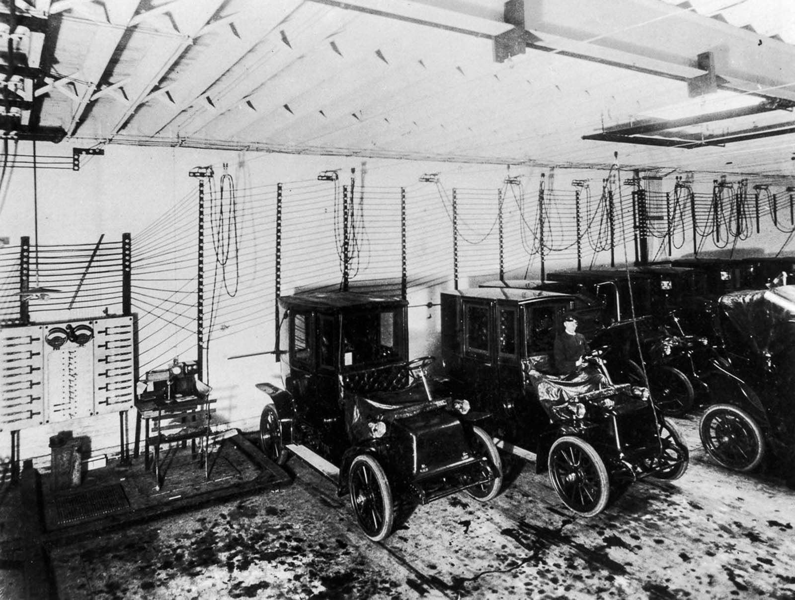
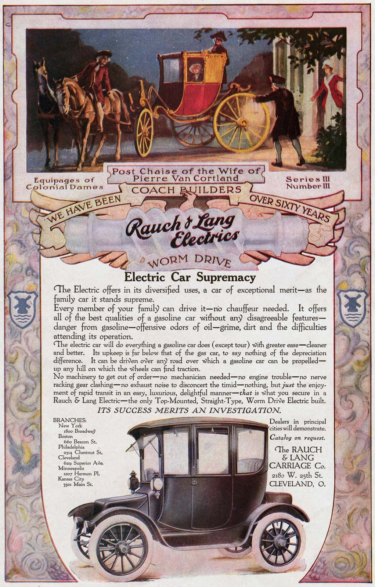

A világ útjain egyre több elektromos jármű közlekedik, ezek üzemeltetéséhez nincs szükség környezetszennyező fosszilis tüzelőanyagokra. De vajon tényleg környezetkímélőbbek az elektromos autók? A CNBC körbejárta a kérdést.
Rögtön az elején le kell szögezni, hogy az elektromos járművek akkumulátorai közvetlenül az elektromos hálózatról tölthetők, vagyis egy olyan rendszerről, amelyik maga is gyakran fosszilis tüzelőanyagokkal működtetett erőművekből táplálkozik. Az is kérdéses, hogy mennyire energiaigényes egy elektromos autónak vagy egy elektromos autó akkumulátorának előállítása, összehasonlítva egy hasonló, de hagyományos jármű építésével.
Már csak ezeket mérlegelve is felvethető: valóban környezetbarát megoldást jelentenek az elektromos járművek?
A CNBC szerint a rövid válasz: igen. Ugyanakkor igaz az is, hogy még évekre vagyunk attól, hogy a teljes környezetvédelmi potenciáljukat valósággá tegyük ezeknek az eszközöknek.
Azt gondolhatná az ember, hogy az elektromos autók csak néhány éve, de legfeljebb csak néhány évtizede jelentek meg a világon. Azonban az első elektromos autó megjelenése megelőzte a benzinmotoros autókat. Az első áramforrás tárolására alkalmas akkumulátort Gaston Planté francia fizikus találta fel, 1859-ben. A világ első elektromos járművét, egy biciklit 1881. április 19-én tesztelte Gustave Trouvé francia feltaláló.

A kísérleten felbuzdulva döntött úgy Thomas Parker brit feltaláló, hogy az akkumulátorral megpróbál egy elektromos autót létrehozni. Ez a terve 1884-ben sikerült is neki, azonban ezt sokan nem veszik figyelembe, ugyanis az első hivatalos dokumentáció 1895-ből származik, amely bizonyítja, hogy ez neki is sikerült. Ezért az első feltaláló aki hivatalosan megalkotta az elektromos autót, Andreas Flocken német mérnök volt, aki 1888-ban hivatalosan legyártotta az első teljesen elektromos autót. Mivel az elektromos autó nem használt oxigént, ezért a bányákban a széntüzelésű vonatokat lecserélték elektromosokra. Ezzel nemcsak biztonságossá vált a bányákból kihozni a szenet, de több is maradt meg a kihozatal után.

A Columbian nevű elektromos autó
Az elektromos autók több sebesség és távolság rekordot is tartottak ugyanis 1899. április 29-én, a Jamais Contente nevű elektromos autóval, Camille Jenatzy 105,88 km/h-ás végsebbességet ért el. Ferdinand Porsche egy összkerék meghajtású elektromos autót készített, amely szinte minden rekordot megdöntött. A vásárlók 1895-re egyre jobban figyelemmel kísérték az elektromos autók fejlődését és ezzel együtt egyre jobban érdekelte őket ez az újdonság.

A Camille Jenatzy miután megdöntötte a sebességrekordot
Ettől a dátumtól kezdődött az elektromos autók aranykora. London utcáit ellepték az elektromos taxik, melyeknek a lakosok becenevet is adtak, a sajátos zümmögő hangjuk után csak „Kolibir-nek” nevezték őket. Az Egyesült Államokban pedig 1897-ben megalapították az Electric Vehicle Company-t amely ugyan nem volt hosszú életű de több elektromos járművet is legyártott.

Elektromos autó töltőállomás
Az elektromos autóknak nagyon sok előnye volt az akkori benzines vetélytársaikkal szemben, ugyanis nem volt rezgésük, nem volt szaguk és szinte teljesen csendesek voltak működés közbn is. Továbbá nem igényelték a sebességváltást sem, de ugyanígy nem igényelt kézi erőfeszítést a beindításhoz sem. Az elektromos autók a gazdag emberek körében egyre jobban elterjedtek, könnyű kezelhetőségük és halk működésük miatt. A nők imádták az autót, mert nagyon könnyű volt kezelni és könnyűek is voltak. Ezért a korabeli felfogás megbélyegezte az elektromos autókat, mondván, azok „női járművek”. Ebből adódóan nagyon sok autógyár, akik elektromos autókat gyártottak, úgy építette meg a modelljeit, hogy azok külseje teljes mértékben megegyezzen egy benzines autóéval. Ilyen volt például, hogy hűtőradiátort helyeztek a kocsi elejébe.

Elektromos autó hirdetés
Az 1910-es évekre az Egyesült Államokban futó autók csaknem fele elektromos meghajtású volt és mindössze 20%-a volt benzines. Ezekben az években tetőzött az elektromos autók értékesítése is. Mivel azonban az akkumulátorok töltését árammal kellett megoldani és ekkoriban még a háztartások nagyrészében nem volt bevezetve az áram, így különböző töltőállomásokat hoztak létre. Később olyan szolgáltatást is nyújtottak, hogy a gépjárműveket akkumulátor nélkül is megvehették és úgy lehetett kapni a belevaló akkumulátorokat, mint a ceruzaelemeket. Melyeket később leadtak töltésre, cserébe pedig kaptak egy újat. Ezt a szolgáltatást 1928-ig nyújtották az autógyártó vállalatok, azonban a benzines autók térnyerése után az elektromos autók kezdtek visszaszorulni és már nem volt jövedelmező fenntartani ezt a szolgáltatást.